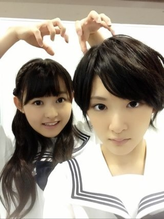
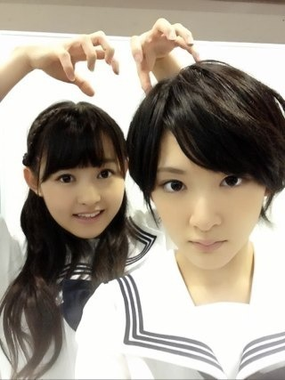
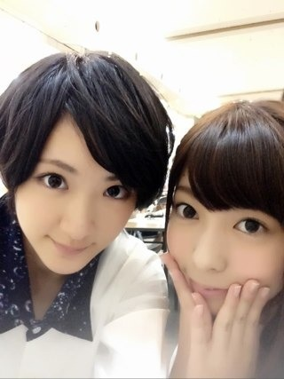
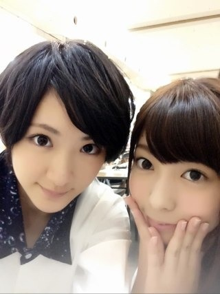
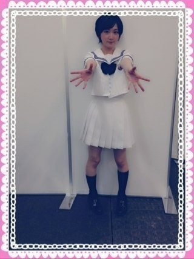
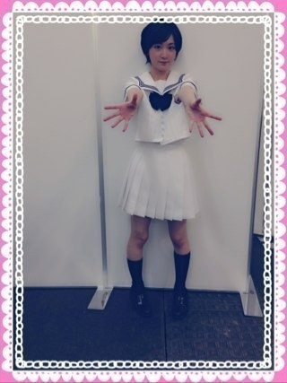

| 2013/07 21 Sun | 京都全国握手会ヽ(・∀・)ﾉ |
今日は京都にて全国握手会でしたっ！
きてくださった方ありがとうございます！
レーンはまりちゃんと！
いこまはいつもまりかのことをまりちゃんと呼ぶ！

きてくださった方ありがとうございます！
ライヴのダンス、いつもキレキレを心がけているのですがみなさんちゃんと見てくださっていて嬉しい

レーンはまりちゃんと！
いこまはいつもまりかのことをまりちゃんと呼ぶ！

シュール。
そしてゆったんお誕生日おめでとうございます！
ゆったんもうハタチなんだね〜
まだ高校生って感じがするよ〜
ゆったんはいつも乃木坂にキラキラした空気を届けてくれる！
だからみんなどよ〜んとしている時も不思議と元気になるんだよね！
おしゃれだし動きが可愛いし！
ハタチで大人だけどそんな小動物のようなゆったんでいてね！

そしてゆったんお誕生日おめでとうございます！
ゆったんもうハタチなんだね〜
まだ高校生って感じがするよ〜
ゆったんはいつも乃木坂にキラキラした空気を届けてくれる！
だからみんなどよ〜んとしている時も不思議と元気になるんだよね！
おしゃれだし動きが可愛いし！
ハタチで大人だけどそんな小動物のようなゆったんでいてね！

ゆったんのおしりすきよ

では！
お留守のみなさんお待ちかねのエアー握手会開催するよっ！

では！
お留守のみなさんお待ちかねのエアー握手会開催するよっ！

全身〜
あっぷ！
ではまた会う日までね〜
へばなっ！
ではまた会う日までね〜
へばなっ！
コメント(457)
2013/07/21 22:30